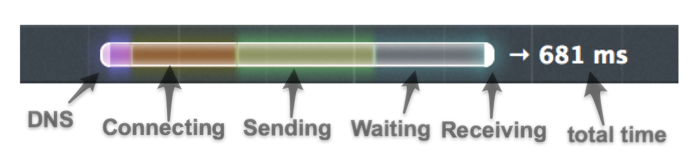
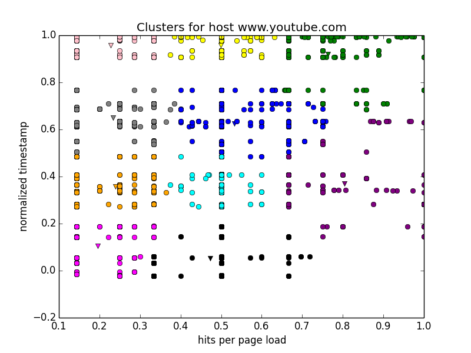
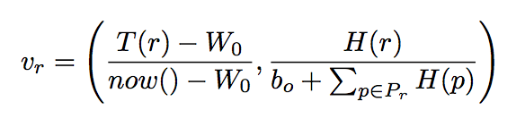
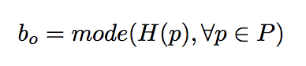
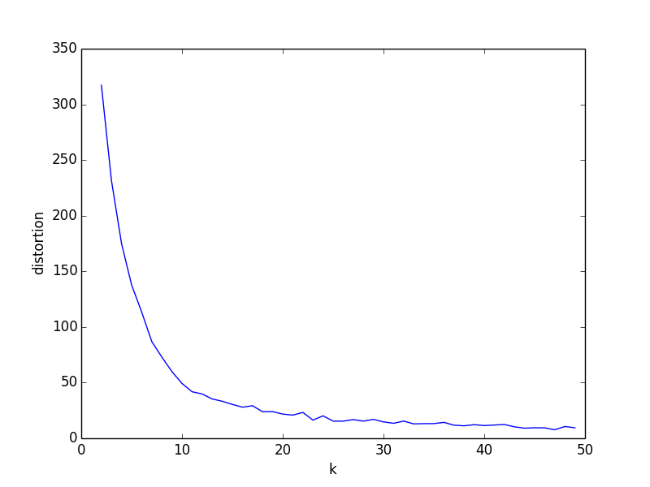
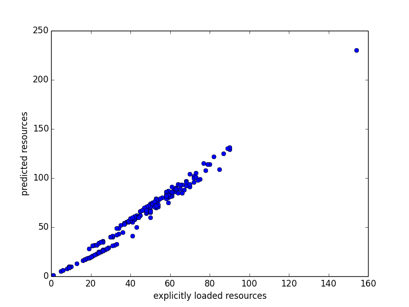
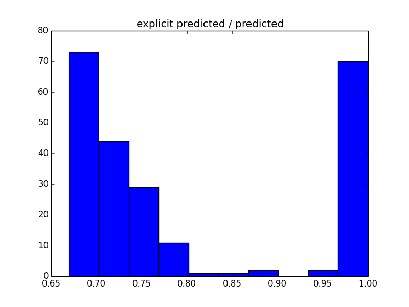
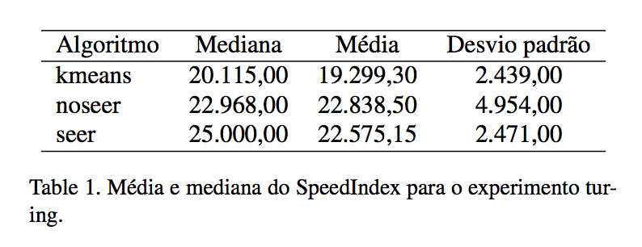
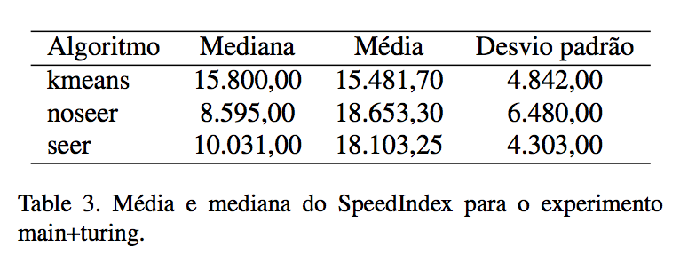

Navegador moderno: "pipeline" de interpretação de documentos
Camada de rede é particularmente crítica para performance
Otimização de requisições: cache, HTTP/1 pipelining, HTTP/2 server push...
Abordagens de machine learning nos navegadores Chrome e Firefox
Ações especulativas tomadas para os recursos de páginas individuais
Carregamento de recurso passa por várias etapas que podem ser otimizadas

Firefox: pré-resolução DNS e pré-conexão
Especialmente úteis em conexões móveis, com alto RTT
Identificar recursos com padrões de acesso similares
Agir sobre host, cruzando a fronteira das páginas
Hipótese simplificadora: usar dados já coletados pelo Firefox
Se possível, reduzir número de parâmetros
Alvo móvel: aprendizado online
Solução proposta: clustering de recursos sob um mesmo host
Seleção de clusters relevantes quando uma página é carregada
Online: usar apenas dados "recentes"
Feature vector bidimensional: timestamp normalizado e taxa de hits
Importâncias "global" e "local"
Primeira componente: tempo do último acesso, normalizado pela janela de interesse
Segunda componente: hits normalizados com bias
Bias: penalizar recursos muito novos/pouco compartilhados
K-Means com distância Euclidiana
Clusters grandes: subclustering
Escolha de K: regra do cotovelo no dataset do YouTube
K = 10 para clusters, 5 para subclusters
Efeito "long pole": grande importância a recursos "explícitos"
YouTube: 3 clusters cobrem acima de 90% dos recursos explícitos
Predição: cobrir recursos explícitos com 4 clusters, até 15 subclusters
Agressividade: predição não maior que 50% dos recursos explícitos
Ações especulativas para recursos explícitos + predição
Predições com "folga" para diversas páginas
Páginas desconhecidas: heurística
WebPageTest com 20 carregamentos em velocidade 3G
Métrica: SpeedIndex das primeiras visualizações
Variantes: "kmeans" (pré-conexão), "seer", "noseer"
Treinamento por aproximadamente 4 dias, mesmos dados para todos
Dificuldades: flutuações da rede, diferenças nas máquinas de treinamento e teste
http://en.wikipedia.org/wiki/Alan_turing
kmeans 3,19 desvios padrão abaixo do baseline
Ao menos 53,49 % das requisições preditas, 58,14 % conhecidas
Testes de Friedman e Nemenyi apontam que diferença é significativa
http://en.wikipedia.org/wiki/Main_page e http://en.wikipedia.org/wiki/Alan_turing
kmeans 2,9 desvios padrão abaixo do baseline
Ao menos 44,12 % das predições corretas, 65,71 % das requisições conhecidas
Evidência da validade de se cruzar a fronteira das páginas
SpeedIndex menor, mas pode haver interferência do cache
No entanto, testes estatísticos NÃO apontam diferença
Nenhuma melhora para páginas complexas e voláteis
cnn: apenas 36,48 % das requisições conhecidas
politics: heurística simples previu 19,81 % dos recursos...
...mas isso era apenas 5 % do tamanho da predição. Overhead?
Algoritmo trouxe melhoras para páginas simples
Páginas complexas ainda sem solução boa
Trabalho futuro: identificar e priorizar "long poles", maior estudo de páginas desconhecidas